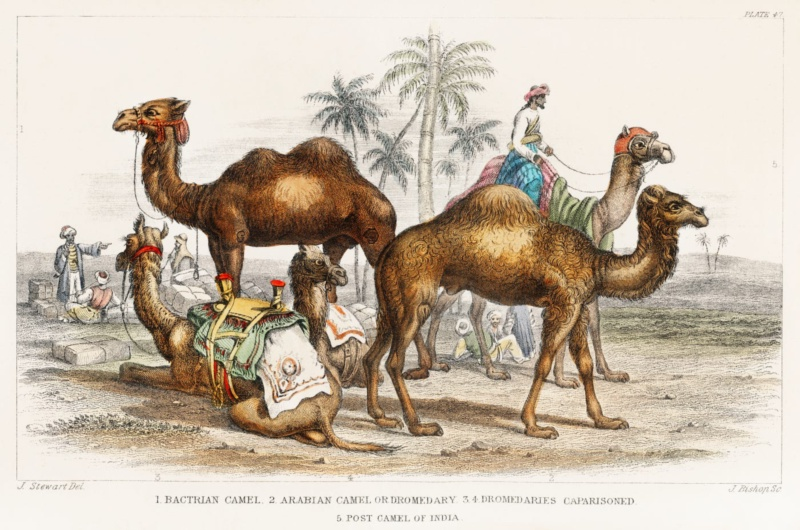

© rawpixel.com
Apache Camel community is happy to announce the general availability of Camel K 2.6.0. We have a lot of new exciting features we want to share within this release.
Plain Camel Quarkus runtime
From version 2.6.0 onward, you’ll be able to run plain Camel Quarkus. You may know that since the beginning, Camel K had used Camel K Runtime, a lightweight runtime built on top of Camel Quarkus. In order to avoid introducing any breaking compatibility change, you will need to configure each of your Integrations (or the IntegrationPlatform) to be able to use this runtime. This is bringing full parity with the execution of Camel Quarkus applications locally (ie, via Camel JBang) and unifying the user experience of Camel applications running on the Cloud.
We strongly advice to start using this runtime already as we are planning to promote this as the default future runtime.
First class GitOps experience
In the last versions we have worked to introduce some GitOps experience to Camel applications running in the cloud. Starting from this version you will be able to use a quick kamel CLI feature that will make this experience very much complete. The Camel K GitOps promotion command will create a Kustomize based overlay structure that you can use to populate a Git repository and with that start a release procedure with any of the CICD tools you normally use.
JDK 21 availability
A quite interesting news is also the availability of a JDK 21 based container Camel K operator beside the default JDK 17. It can be useful if your company has moved to JDK 21 already and you want to align such move.
Run unprivileged application
For historical reasons we needed to run each of the Camel application using a privileged user. This is no longer the case, so, from now on you can safely run your Camel application unprivileged. Check it out the Security Context trait documentation to learn more.
In order to avoid introducing any breaking compatibility changes we could not turn this as the default behavior. For this reason we invite you to explicitly set this configuration on any new Integration developed with Camel K 2.6.0. This feature will surely be the default in the future.
Builder Pods default resources
If you’re using the pod build strategy, from now on your builds will have a default base setting which is a safer for your cluster. With this best practice you make sure to avoid a build to drain all the resources of your cluster node. And you can surely fine tune the resources your build requires as you used to.
Integration Platform production ready conditions
In the previous release (2.5.0) we made it more explicit the need for a user to configure an IntegrationPlatform. In this release we’re adding a few more warning condition to let you know if the configuration is following the best practices for a production ready environments. For example, we’ll be warning when you’re using a non secure HTTP endpoint registry or you’re not configuring any settings for Maven (ie, a Maven proxy).
Support Camel core Error Handler
We want Camel K to be more and more using default Camel core features. For this reason we’ve enabled the direct support of Camel Core Error Handling. From now on you can easily add any configuration supported by the core and the operator will do the rest.
Removed support for v1alpha1 API
From this version onward we won’t support any longer the previous v1alpha1 Custom Resources. They were deprecated long ago (version 2.0) and we think the user base has already moved to the supported v1 alternative.
Removed support for Integration spec in Pipes
This is another old time deprecated feature. We won’t support any longer the Integration configuration in Pipe spec.
Main dependencies
Let’s have a look at the major dependencies changes. The operator is now built with Golang 1.23 and the Kubernetes API is aligned with version 1.30.8. For compatibility reasons we’re defaulting the runtime to Camel K Runtime version 3.15.2 (based on Camel 4.8.3, LTS). However, as stated above, you’re very much invited to move already to any more recent plain Camel Quarkus version.
Deprecations
As you may have seen recently, we’ve pruning features that are not very commonly used in order to focus more on the top priorities. This is the list of deprecations with version 2.6.0:
- Deprecate exclusive Openshift features (S2I, Routes)
- Deprecate Keda
For the first one related to S2I you should be able to easily move the registry configuration to leverage the existing S2I registry. See more info about configuring Openshift S2I registry. As for the usage of Route trait, since it’s now deprecated you should move the configuration toward Ingress trait instead.
KEDA feature was an experiment and we unfortunately had no opportunity to grew it up as it really deserved. If there is any contributor who’d like to retake that work, we’ll be happy to assist with the development onboarding.
Full release notes
Those were the most interesting features we have delivered in Camel K 2.6.0. We have more minor things, bugs fixing, documentation and dependency updates that you can check in the 2.6.0 release notes.
Stats
From this announcement onward we’ll be adding some stats that may be useful for development team to track the health of the project:
- Github project stars: 876
- Docker pulls over time: 2308783
- Unit test coverage: 47.6 %
Thanks
Thanks a lot to our contributors and the hard work happening in the community. Feel free to provide any feedback or comment using the Apache Camel available channels.